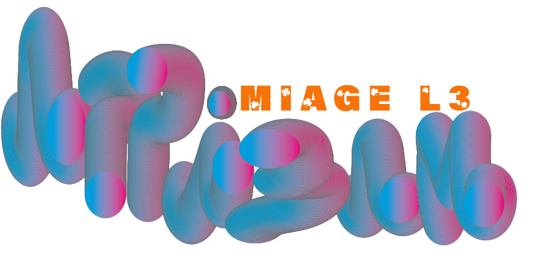

<ion-content [fullscreen]="false">
  <div class="container">
    <div class="bubbles">
      <span style="--i:11;"></span>
      <span style="--i:12;"></span>
      <span style="--i:24;"></span>
      <span style="--i:10;"></span>
      <span style="--i:14;"></span>
      <span style="--i:23;"></span>
      <span style="--i:18;"></span>
      <span style="--i:16;"></span>
      <span style="--i:19;"></span>
      <span style="--i:20;"></span>
      <span style="--i:22;"></span>
      <span style="--i:25;"></span>
      <span style="--i:18;"></span>
      <span style="--i:21;"></span>
      <span style="--i:15;"></span>
      <span style="--i:13;"></span>
      <span style="--i:26;"></span>
      <span style="--i:17;"></span>
      <span style="--i:13;"></span>
      <span style="--i:18;"></span>
      <span style="--i:21;"></span>
      <span style="--i:15;"></span>
      <span style="--i:13;"></span>
      <span style="--i:26;"></span>
      <span style="--i:17;"></span>
      <span style="--i:13;"></span>
      <span style="--i:28;"></span>
      <span style="--i:14;"></span>
      <span style="--i:28;"></span>
      <span style="--i:14;"></span>
    </div>

    <div class="buttons">
      <div class="next">
        <ion-button (click)="next()">
        <ion-label >Next</ion-label>
        </ion-button>
      </div>
      <div class="skip">
        <ion-button color="secondary" (click)="skip()">
        <ion-label >Skip</ion-label>
        </ion-button>
      </div>
    </div>
    <div class="logo">
      
    </div>
  </div>

</ion-content>

